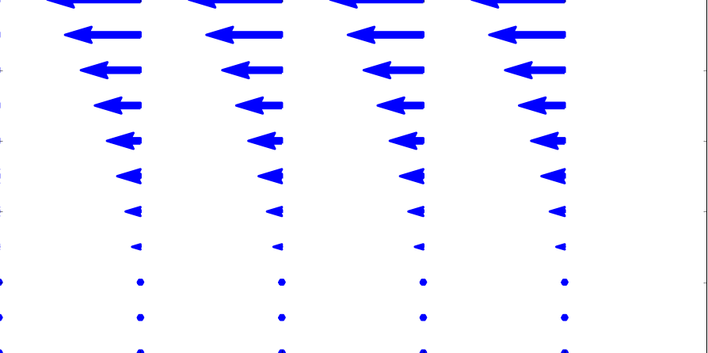
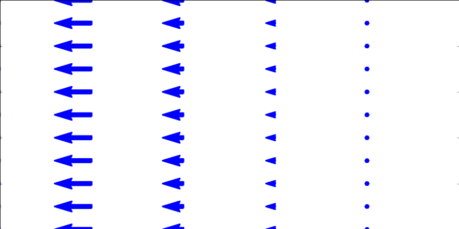
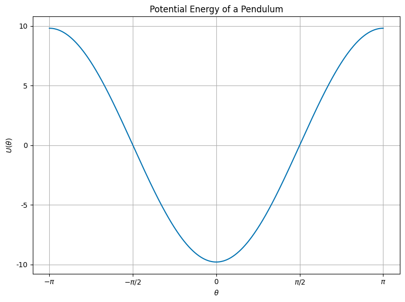
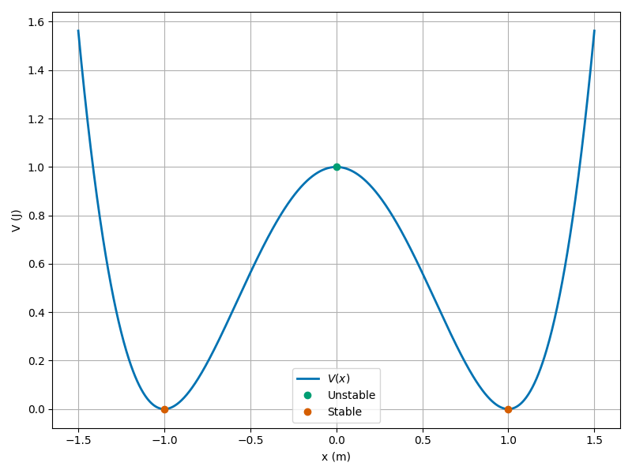

Day 14 - Potential Energy and Stability#
Mexican Hat/Sombrero Potential \(\longrightarrow\)
Mexican Hat Potential#
\(V(\phi) = -5|\phi|^2 + |\phi|^4\)
Unstable vacuum state at \(\phi = 0\)
Peak of the hat
Infinite number of stable minima
\(\phi = \sqrt{5/2}e^{i\phi}\)
Welcome Prof. Rachel Henderson!#
Announcements#
Midterm 1 is available today (Due 25 Feb; late 27 Feb)
DC will say more about this on Wednesday, but:
You may work in larger groups, but solutions are submitted like homework (max 3 group members) on Gradescope
Exercise 0 is for project planning; and can be submitted individually or as a different group on D2l
This Week’s Goals#
Understand the concept of potential energy
Determine the equilibrium points of a system using potential energy
Analyze the stability of equilibrium points
Define and begin to apply conservation of linear and angular momentum
Reminder: The Gradient Operator \(\nabla\)#
\(\nabla\) is a vector operator. In Cartesian coordinates: $\(\nabla = \hat{x}\dfrac{\partial}{\partial x}+\hat{y}\dfrac{\partial}{\partial y}+\hat{z}\dfrac{\partial}{\partial z} = \left\langle \dfrac{\partial}{\partial x}, \dfrac{\partial}{\partial y}, \dfrac{\partial}{\partial z} \right\rangle\)$
Acting on a scalar function \(f(x,y,z)\) produces a vector:
Reminder: The Gradient Operator \(\nabla\)#
\(\nabla\) can act on vector field (function), \(\mathbf{F}(x,y,z)\) with both dot and cross products.
Divergence (Scalar Product) - How does the vector field change in the direction of the vector?#
Clicker Question 14-1a#
Which of the following fields have no divergence?

B.
A
B
Both A and B
Neither A nor B
Reminder: The Gradient Operator \(\nabla\)#
Curl (Vector Product) - How does the vector field change in the direction perpendicular to the vector?#
Clicker Question 14-1b#
Which of the following fields have no curl?
A
B
Both A and B
Neither A nor B
Clicker Question 14-1c#
Consider a vector field with zero curl: \(\nabla \times \vec{F} = 0\). Which of the following statements is true?
The field is conservative
\(\int \nabla \times \vec{F} \cdot d\vec{A} = 0\)
\(\oint \vec{F} \cdot d\vec{r} \neq 0\)
\(\vec{F}\) is the gradient of some scalar function, e.g., \(\vec{F} = - \nabla U\)
Some combination of the above
Reminders: Conservative Forces#
Conservative forces are those with zero curl
The work done by a conservative force is path-independent; on a closed path, the work done is zero
The force can be written as the gradient of a scalar potential energy function
Clicker Question 14-2#
Here’s the graph of the potential energy function \(U(x)\) for a pendulum.

What can you say about the equilibrium points? There is/are:
One stable point
Two stable points
One stable and one unstable point
Two unstable and one stable point
Clicker Question 14-3#
Here’s a potential energy function \(U(x)\) for a pendulum:
Find the equilibrium points (\(\phi^*\)) of the pendulum by setting:
Characterize the stability of the equilibrium points (\(\phi^*\)) by examining the second derivative:
Click when done.
Clicker Question 14-4#
A double-well potential energy function \(U(x)\) is given by
We assume we have scaled the potential energy so that all the units are consistent.
How many equilibrium points does this system have?
1
2
3
4
Clicker Question 14-5#
A double-well potential energy function \(U(x)\) is given by
Find the equilibrium points (\(x^*\)) of the pendulum by setting:
Characterize the stability of the equilibrium points (\(x^*\)):
Click when done.
Clicker Question 14-6#
Here’s a graph of the potential energy function \(U(x)\) for a double-well potential.

Describe the motion of a particle with the total energy, \(E=\)
\(0.4\,\mathrm{J}\), \(<\) barrier height
\(1.2\,\mathrm{J}\), \(>\) barrier height
\(1.0\,\mathrm{J}\), \(=\) barrier height
Click when done.